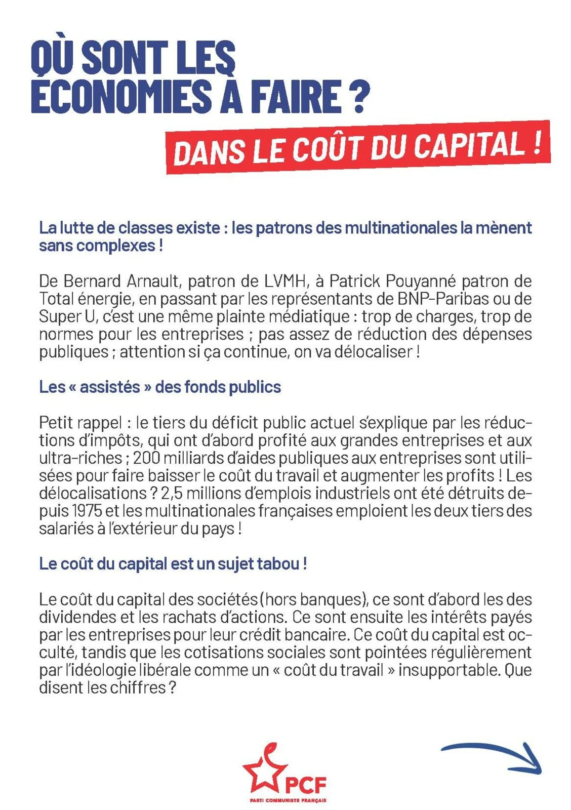
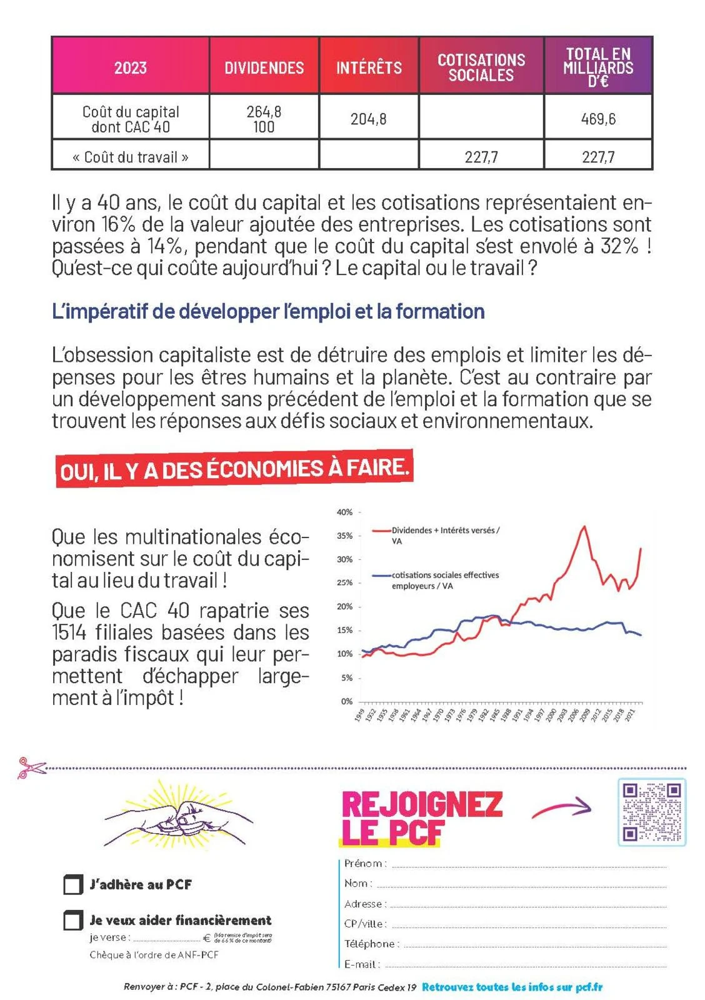

Prise de position
« Où sont les économies à faire ? Dans le coût du capital ! »
Date indiquée par Facebook · 28 mars 2025
Repères éditoriaux
Nous avons publié ce document du PCF sur le coût du capital. Le tract et ses graphiques présentent les arguments de la publication d’origine.
Texte conservé avec la publication
PCF - Où sont les économies à faire ? DANS LE COUT DU CAPITAL !


Sources
Archive rouge · export Facebook · AR-0002-FB-01155
À lire aussi · « La lutte des classes existe ». Notre publication sur le coût du capital